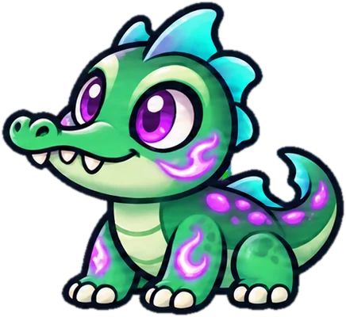

Tap a stage to read its story.
Vexfang is a plump, round-bodied baby serpent with smooth lavender-purple scales, bright blue dorsal spines that sit like a tiny mohawk along its neck, and wide curious eyes. Its forked tongue flicks out constantly, tasting the damp cave air of the Shadow Caves for new scents. Despite its small size, the faint shimmer around its blue spines hints at something far more dangerous growing inside. Children who venture into the caves sometimes find Vexlings curled around luminous fungi, keeping warm in their glow.
Field note: Vexfang's blue spines change shade depending on air humidity - pale in dry air, vivid cerulean near underground springs.
Shadow Caves. Vexfang and its family are found in the Shadow Caves. See everyone who lives there.
Share a Bond Food that matches its types to become friends. Vexfang loves:
A Bond Food is not a trick. It joins your spirit with the Kimuro's spirit, and only when it chooses you.
Print the Kimuro adventure packs: mazes, cards, a board game and Bond Mark medals.
See the printable packs